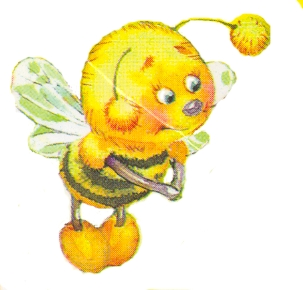
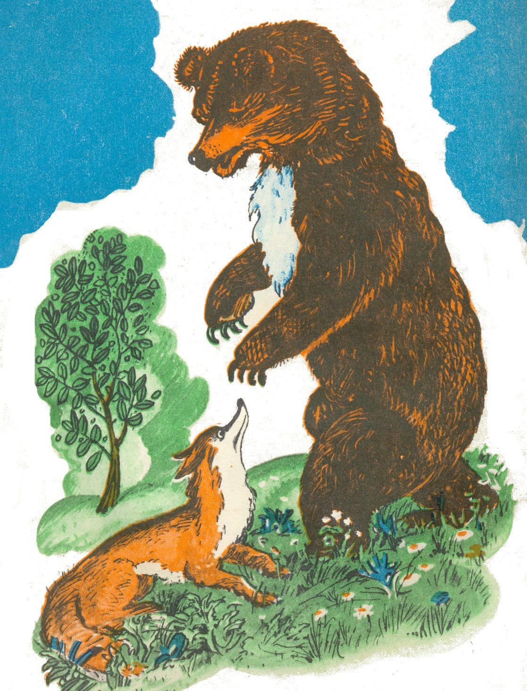

Почему медведь всю зиму не выходит из берлоги

Давно хотелось медведю медком полакомиться.Высоко на дереве он увидел большое дупло, кругом него ползают и копошатся пчёлы.
Не стал медведь долго думать — полез на дерево. Добрался он до пчелиного гнезда и уселся на толстый сук.
Когда пчёлы облепили его, запутались в шерсти, он слез с дерева и стал валяться и кататься по земле. Гак он раздавил всех пчёл. После этого медведь залез на дерево лакомиться: сгребает лапой большие куски мёда, кладёт их в рот и чавкает на весь лес.
Увидел это охотник и думает:
«Погоди, сластёна, зарублю я тебя топором!» Взобрался он на дерево, взмахнул топором, хотел зарубить медведя, но отрубил ему только хвост. Медведь с рёвом скатился вниз и убежал.
Долго медведь горевал из-за отрубленного хвоста. Он бродил по лесу и однажды вышел к роднику. Здесь он снова повстречался с лисой.
Увидала лиса печального медведя, удивилась очень и спрашивает его ласково:
— Что с тобой, медведушка? Что случилось? Где оставил ты хвост свой?
Рассказал медведь лисе о своём горе и стал совета просить. Лиса не знает, как ответить медведю, что посоветовать.
— Как ты теперь покажешься на глаза другим зверям без хвоста? Все будут смеяться над тобой, все будут дразнить тебя, издеваться. Плохи дела твои,— говорит лиса.
Выслушал медведь лису и приуныл пуще прежнего. Думает: «Лучше бы совсем мне не ходить по земле, чем быть таким куцым». И просит он лису:

— Помоги мне, подружка, помоги!А лиса помнит еще проделки медведя с мёдом и говорит печальным голосом:
— Да, плохи, брат медведушка твои дела. Ничего нельзя поделать. Но попробую посоветовать тебе кое-что, может, избавишься от этой беды.— Сама же думает: «Если будет он ходить со мной, то быть мне голодной».
— На всё я согласен,— отвечает медведь,— только посоветуй, ты только помоги!
Лиса же продолжает:
— Куда ты спрячешься такой большой? Один путь тебе остаётся: вырой глубокую яму и забирайся туда на всю зиму, отдыхай. Там тебе будет тепло и спокойно. А зверям всем я скажу, что ты болен. Как настанет весна и опять всё оденется в листву, ты вылезешь и будешь ходить везде, и никто не заметит, что нет у тебя хвоста.
— Какая ты умница, какая ты хитрая! — говорит медведь.— Не зря же прозвали тебя хитрой лисой.
Обрадовался медведь, послушался совета лисы: все лето бродил по лесу, прятался в густой траве. А когда пришла осень, опали листья, и высохла трава, медведь вырыл глубокую берлогу, забрался в неё и заснул на всю зиму.
С тех пор, как только настаёт осень, медведь забирается в берлогу и спит там до весны. А весной он опять вылезает и прячется в зелени, в густой траве. И никто из зверей, не знает, что у медведя нет хвоста.